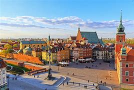
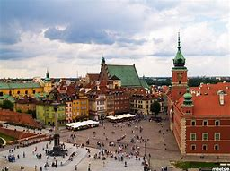

Warsaw
Poland
Warsaw is the capital, the largest city in Poland in terms of population and territory. The city became the capital in 1596, when King Sigismund III moved his residence here after a fire in Wawel Castle in Kraków. The capital status of the city was confirmed only in the Constitution of 1791. A river, the Vistula, flows through the city, dividing the city approximately equally.


home
©VK